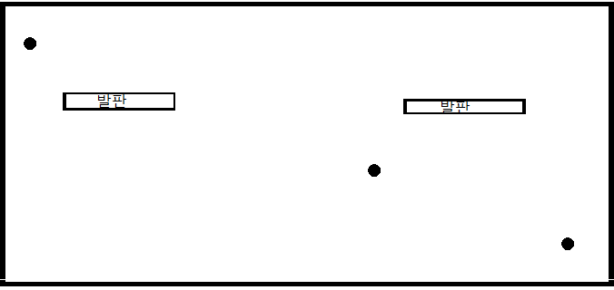
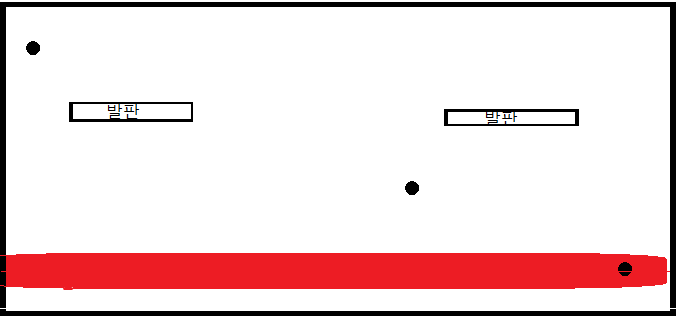

3) 보스

바닥 내려치기
진동, 내려친부분으로 부터 땅이 잠시동안깨지면서
데미지
1) 벽에 팅겨지는 총알
총알이 벽에 팅기며 나아가고 있던 방향으로 꺽인다
총알의 갯수는 15초마다 늘어나고 총 4개까지 생성된다.

2) 레이저빔
1층, 2층, 3층으로 레이저빔이 나간다
플레이어를 층 수를 인식하여서 쏨
쿨타임 5s
보스가 맞으면 데미지 (보스에 맞도록 유도)

3) 보스
바닥 내려치기
진동, 내려친부분으로 부터 땅이 잠시동안깨지면서
데미지
3)-1 보스 2페이지
사진